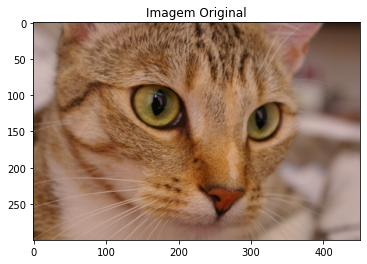
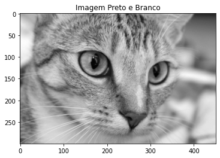
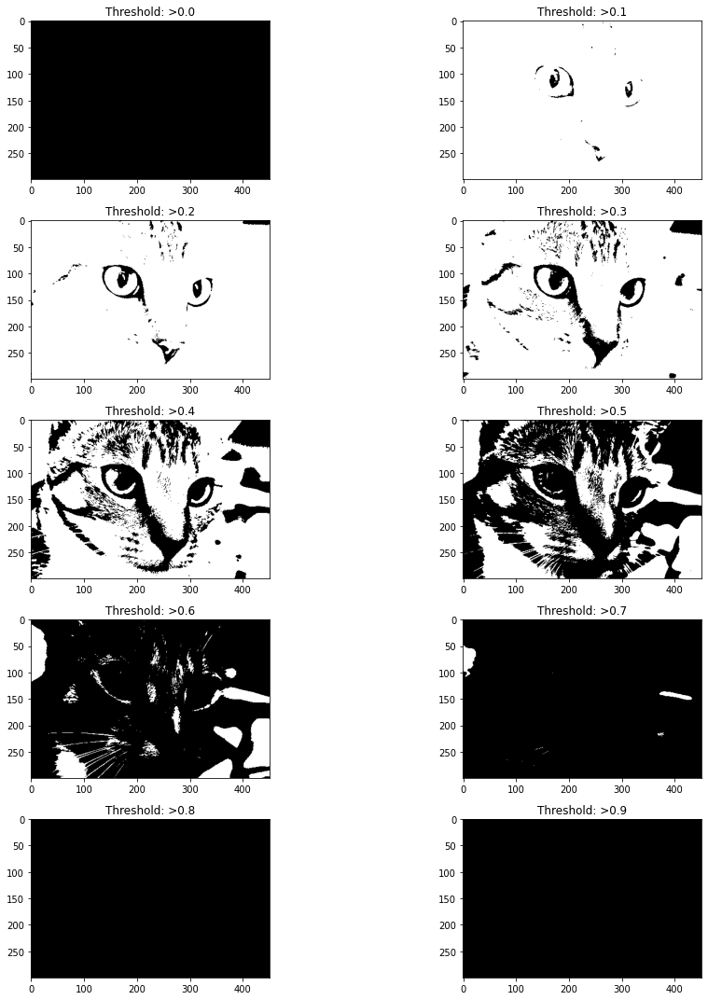
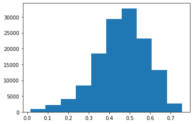
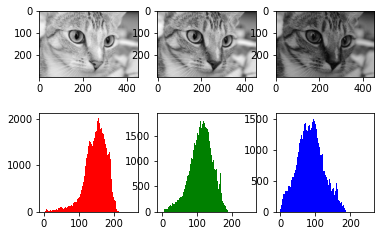
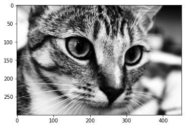

import matplotlib.pyplot as plt
import numpy as np
from skimage import data
from skimage import filters
from skimage.color import rgb2gray
from skimage import exposureimg = data.chelsea()
gray_img = rgb2gray(img)
plt.title("Imagem Original")
plt.imshow(img, cmap = 'gray') <matplotlib.image.AxesImage at 0x7f10cd25e150>
plt.title("Imagem Preto e Branco")
plt.imshow(gray_img, cmap = 'gray') <matplotlib.image.AxesImage at 0x7f10cda29b90>
#1 Realizar a limiarização de uma imagem usando Python e scikit-image.
plt.figure(figsize=(15, 15))
for i in range(10):
binarized_gray = (gray_img > i*0.1)*1
plt.subplot(5,2,i+1)
plt.title("Threshold: >"+str(round(i*0.1,1)))
plt.imshow(binarized_gray, cmap = 'gray')
plt.tight_layout()
#2 Plotar o histograma de uma imagem tons de cinza usando Python, scikit-image e matplotlib.
plt.hist (gray_img.ravel())(array([ 971., 2171., 4040., 8382., 18469., 29427., 32736., 23188.,
13322., 2594.]),
array([0.01512078, 0.0891698 , 0.16321882, 0.23726784, 0.31131686,
0.38536588, 0.4594149 , 0.53346392, 0.60751294, 0.68156196,
0.75561098]),
<a list of 10 Patch objects>)
#3 Plotar o histograma de uma imagem colorida (um histograma por canal de cor) usando Python, scikit-image e matplotlib.
img_red, img_green, img_blue = img[:,:,0], img[:,:,1], img[:,:,2]
fig, ax = plt.subplots(2,3)
ax[0,0].imshow(img_red, cmap='gray')
ax[0,1].imshow(img_green, cmap='gray')
ax[0,2].imshow(img_blue, cmap='gray')
bins = np.arange(-0.5, 255+1,1)
ax[1,0].hist(img_red.flatten(), bins = bins, color='r')
ax[1,1].hist(img_green.flatten(), bins=bins, color='g')
ax[1,2].hist(img_blue.flatten(), bins=bins, color='b')
plt.figure(figsize=(30, 30))<Figure size 2160x2160 with 0 Axes>
<Figure size 2160x2160 with 0 Axes>#4 Equalizar o histograma de uma imagem usando Python e scikit-image.
img_eq = exposure.equalize_hist(gray_img)
plt.imshow(img_eq, cmap = 'gray') <matplotlib.image.AxesImage at 0x7f10ccebd410>
#5 Detectar (concluir) que uma foto está subexposta ou que está superexposta, analisando o histograma.
A imagem tende mais a Superexposição, pois analizando o gráfico da questão número 2 ele tende a conter maiores concentrações ao lado esquerdo do gráfico.
#6 Detectar (concluir) se uma imagem está com baixo contraste ou alto contraste, analisando o histograma.
O contraste de vermelho é mais baixo, o do verde é equilibrado e do azul é alto, analizando o gráfico da questão 3.